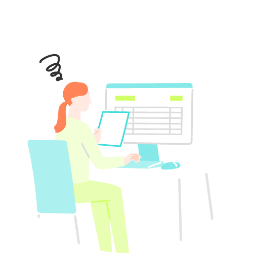
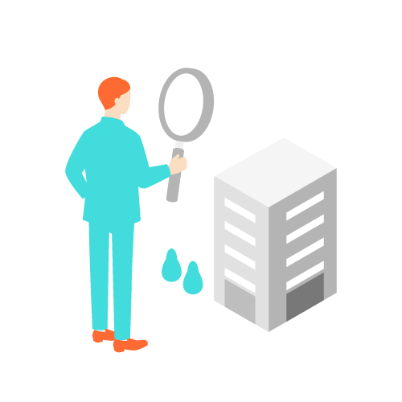
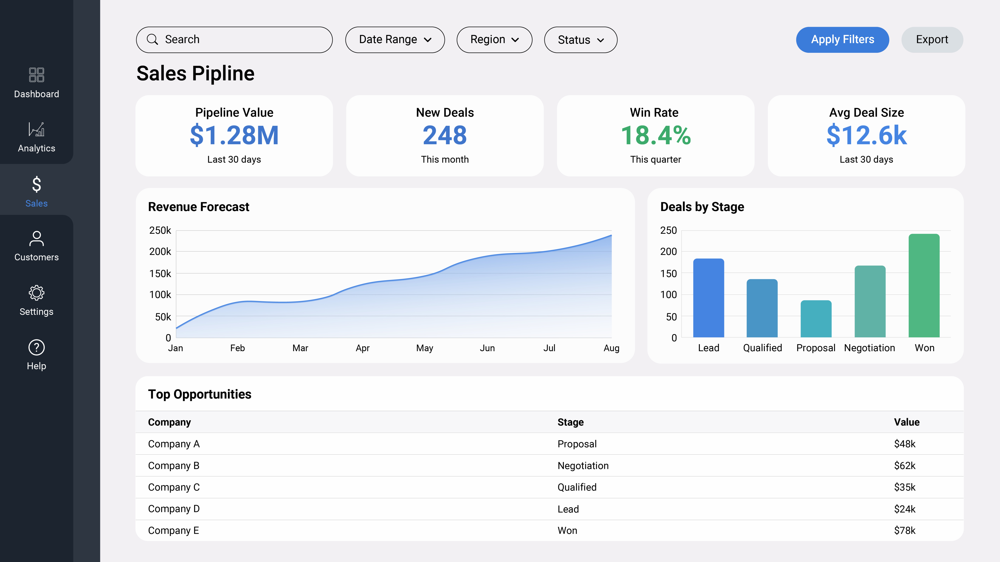

「会社の想い」を、
24時間伝え続ける
仕組みを。
「ここなら任せられる」と
確信していただくための、
誠実な情報発信の場をともに設計します。
お客様は、いつでも、
「失敗しない選択」の根拠を
自分のペースで探しています。
発注を検討しているお客様は、
担当者に連絡する前に、 すでに深いリサーチを終えています。
「この会社は信頼できるか」 「自分の課題を理解してくれるか」 ——
その判断は、スマートフォンでそして自分のペースで、何度も繰り返し行われています。
-
古いサイトは、

無言で「準備不足」を
伝えています。情報が古い、レイアウトが崩れている、問い合わせ先が見つからない。それだけで「この会社は大丈夫か」という不安が生まれます。
-
お客様は、

断る理由を探しながら
読んでいます。「なぜこの会社に頼むべきか。」それは、実績の数字だけではありません。その会社ならではの想いや姿勢が伝わったとき、確信が生まれます。
-
整えることは、
まだ見ぬ顧客への
誠実な準備。まだ出会っていないお客様に対して、会社の誠実さを24時間伝え続けられる。それがWebサイトの本質的な役割です。
約8割
サイト更新が遅れている企業の約8割が
「商談機会の損失」を実感
サイト更新が遅れている中小企業の経営者・幹部を対象にした調査では、約8割が「商談機会の損失」を実感していると回答しています。
※CROSS LINK社内調査（2024年、中小企業経営者・幹部対象）「人を引き付ける力」こそが、
Webの真の付加価値である。
「伝えたい」という熱量がなければ、相手に伝わるホームページにはなりません。
流れ作業の制作ではなく、会社の想いを言語化し、
客観的な視点を与えるディレクターが必要な理由がここにあります。
-
PRINCIPLE 01「伝えたい想い」がなければ、
どれだけ美しいサイトも、届かない。Webサイトの価値は、見た目の美しさだけではありません。「誰に、何を、どの順番で伝えるか」という設計と、その背後にある会社の想いこそが、見込み客の心を動かします。想いを言語化する設計に向き合うことが、最も費用対効果の高い選択です。
-
PRINCIPLE 02「見た目を新しくする」より先に、
「何を伝えるか」を整理してください。リニューアルの動機が「デザインが古い」だけでは、議論は好みの問題に終始します。本来確認すべきは「このページを見たお客様が、次に何をしたくなるか」という問いです。ディレクターの役割は、その問いを一緒に整理することです。
-
PRINCIPLE 03「安さ」で選んだパートナーが、
最も高くつくことがあります。制作費の安さは、「戦略を考える工程」が省かれているサインです。戦略なき美しいサイトは機能しません。投資すべきは、成果から逆算して設計できるディレクターの思考です。
「作ったあと」こそが、
本番だと考えています。
正直に申し上げると、私たちも以前は「制作して納品する」ことをゴールにしていた時期がありました。
その反省から、現在は体制を根本から変えています。
公開後の変化に責任を持つ「完全伴走型」こそが、私たちの唯一の契約スタイルです。
-
定期的なアナリティクス報告を義務化
公開後も定期的に、Googleアナリティクスのデータを基にした報告書を提出します。「どのページで離脱しているか」「どの流入経路が成果につながっているか」を数字で可視化し、次の改善アクションを明確にします。市場の反応を見ながら、常に改善し続けます。
※保守管理ご契約のお客様対象です。
-
論理的根拠を持って改善し続ける
アートディレクター（Web戦略・ブランディングの専門家）がデータを読み解き、「このページのこの要素を変えることで、問い合わせ率の改善が見込める」という具体的な仮説と提案を定期的にお届けします。感覚ではなく、論理と数字が改善の根拠です。
※保守管理ご契約のお客様対象です。
-
戦略設計から改善まで、
担当者が変わらない設計した人間が、改善も担当します。
「なぜそう設計したか」という文脈が引き継がれるため、担当者交代による情報ロスが起きません。会社の想いを深く理解した一人のディレクターが、一貫して伴走します。
成果が出るプロジェクトと
そうでないプロジェクトの、違い。
成果の出るプロジェクトには、共通した特徴があります。
以下の比較を参考に、貴社の現状と照らし合わせてみてください。
私たち、CROSS LINKが
大切にしていること
専門家と経営者が対等に話せる関係を大切にしています。
すべてお任せでも、すべて自分で決めたいでもなく、
根拠をもとに一緒に考えられるパートナーシップこそが、私たちの理想です。
浜松・静岡・愛知・横浜エリアを中心に、中小企業の経営者・幹部の方と、長期的な関係を築いてきました。
「確かな成果」を、一社完結で。
私たち、株式会社CROSS LINKは、創業の礎である写真・印刷の技術と現代のデジタルマーケティングを融合させ、企業のミッションを具現化する「クリエイティブ・パートナー」です。自社スタジオを完備した「完全内製化」の体制で、戦略立案からプロによる撮影、Web・印刷物制作までを一気通貫で行うことで、お客様の想いを薄めることなく形にします。
単なる制作会社として「作る」ことにとどまらず、採用や集客という経営課題に最後まで向き合い、誠実に歩みを共にします。
COO／高林 大輔
TEL 053-436-1956
E-mail info@crosslink-lab.com
URL https://www.crosslink-lab.com/
まずは、現状を整理するところから。
浜松・静岡・愛知・横浜エリアの中小企業経営者・幹部の方へ。
まずは貴社の現状や課題をじっくり伺い、「何から着手すべきか」の優先順位を一緒に整理します。
強引な営業や契約の強制は一切ございません。
オンライン相談も承っておりますので、まずはお気軽にご相談ください。
ご相談・ご依頼はこちらから
しつこい営業電話はいたしません。まずはお気軽にご相談ください。
ご要望をお聞きした上で、最適なご提案をいたします。
※ご入力いただいた情報は、ご相談のご連絡以外の目的には使用いたしません。プライバシーポリシーに基づき、厳重に管理いたします。